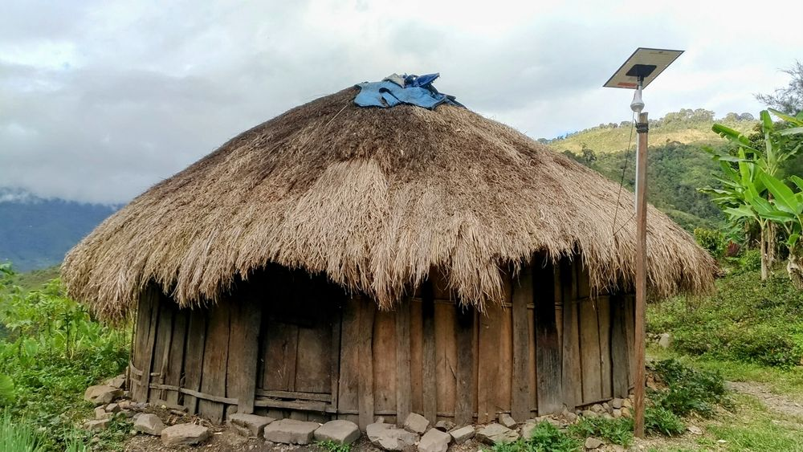

Rumah Honai adalah rumah tradisional khas suku Dani di Papua. Rumah ini memiliki bentuk bundar dengan atap runcing dari jerami atau ilalang. Arsitekturnya dibuat untuk menahan suhu dingin pegunungan, angin kencang, dan menjaga kehangatan di dalam rumah.
Struktur Honai biasanya terbuat dari kayu yang kuat, sedangkan bagian dalamnya gelap dan tidak memiliki jendela agar panas tetap terjaga. Lantai rumah juga dibuat lebih tinggi dari tanah, menambah fungsi isolasi dari suhu dingin malam hari.
Rumah Honai tidak hanya memiliki fungsi sebagai tempat tinggal, tetapi juga memiliki nilai sosial dan budaya. Di dalam Honai, masyarakat melakukan musyawarah, pendidikan adat, dan penyimpanan benda-benda berharga. Bagi suku Dani, Honai adalah simbol kebersamaan, kehangatan keluarga, serta identitas budaya yang sangat dijaga.